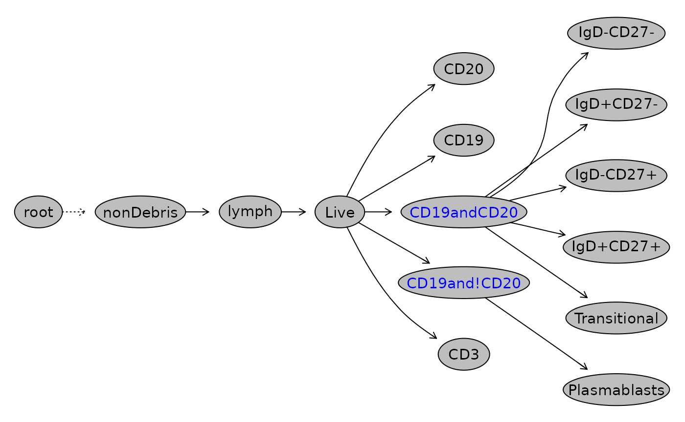

flowWorkspace Introduction: A Package to store and maninpulate gated flow data
Greg Finak gfinak@fhcrc.org, Mike Jiang wjiang2@fhcrc.org
flowWorkspace-Introduction.RmdPurpose
The purpose of this package is to provide the infrastructure to store, represent and exchange gated flow data. By this we mean accessing the samples, groups, transformations, compensation matrices, gates, and population statistics in the gating tree, which is represented as a GatingSet object in R.
The GatingSet can be built from scratch within R or imported from flowJo XML workspaces (i.e. .xml or .wsp files) or GatingML files . Note that we cannot import .jo files directly. You will have to save them in XML workspace format.
Import flowJo workspace
The following section walks through opening and importing a flowJo workspace.
Opening a Workspace
We represent flowJo workspaces using flowjo_workspace objects. We only need to know the path to, and filename of the flowJo workspace.
library(flowWorkspace) path <- system.file("extdata",package="flowWorkspaceData") wsfile <- list.files(path, pattern="A2004Analysis.xml", full = TRUE)
In order to open this workspace we need CytoML package:
library(CytoML)
## Warning: replacing previous import 'ncdfFlow::filter' by 'dplyr::filter' when
## loading 'CytoML'ws <- open_flowjo_xml(wsfile) ws
## File location: /usr/local/lib/R/cytoset/flowWorkspaceData/extdata/A2004Analysis.xml
##
## Groups in Workspace
## Name Num.Samples
## 1 All Samples 2We see that this a version 2.0 workspace file. It’s location and filename are printed. Additionally, you are notified that the workspace file is open. This refers to the fact that the XML document is internally represented using ‘C’ data structures from the XML package. After importing the file, the workspace must be explicitly closed using flowjo_ws_close() in order to free up that memory.
For example, the list of samples in a workspace can be accessed by:
## sampleID name count pop.counts
## 1 1 a2004_O1T2pb05i_A1_A01.fcs 61832 19
## 2 2 a2004_O1T2pb05i_A2_A02.fcs 45363 19The compID column tells you which compensation matrix to apply to a group of files, and similarly, based on the name of the compensation matrix, which transformations to apply.
And the groups can be accessed by:
## groupName groupID sampleID
## 1 All Samples 0 1
## 2 All Samples 0 2Keywords stored in an XML workspace can also retrieved by:
sn <- "a2004_O1T2pb05i_A1_A01.fcs" fj_ws_get_keywords(ws, sn)[1:5]
## $`$BEGINANALYSIS`
## [1] "0"
##
## $`$BEGINDATA`
## [1] "3803"
##
## $`$BEGINSTEXT`
## [1] "0"
##
## $`$BTIM`
## [1] "09:20:24"
##
## $`$BYTEORD`
## [1] "4,3,2,1"Parsing the Workspace
These are all retrieved by directly querying xml file. In order to get more information about the gating tree, we need to actually parse the XML workspace into R data structures to represent some of the information therein. Specifically, by calling flowjo_to_gatingset() the user will be presented with a list of groups in the workspace file and need to choose one group to import. Why only one? Because of the way flowJo handles data transformation and compensation. Each group of samples is associated with a compensation matrix and specific data transformation. These are applied to all samples in the group. When a particular group of samples is imported, the package generates a GatingHierarchy for each sample, describing the set of gates applied to the data (note: polygons, rectangles, quadrants, and ovals and boolean gates are supported). The set of GatingHierarchies for the group of samples is stored in a GatingSet object. Calling flowjo_to_gatingset() is quite verbose, informing the user as each gate is created. The parsing can also be done non–interactively by specifying which group to import directly in the function call (either an index or a group name). An additional optional argument execute=T/F specifies whether you want to load, compensate, transform the data and compute statistics immediately after parsing the XML tree. Argument path can be used to specify where the FCS files are stored.
gs <- flowjo_to_gatingset(ws,name = 1); #import the first group
## invalid zeroChan: -2147483648
## caused by the invalid biexp parameters!Downcast the biexp to Calibration table instead!
## invalid zeroChan: -2147483648
## caused by the invalid biexp parameters!Downcast the biexp to Calibration table instead!
## invalid zeroChan: -2147483648
## caused by the invalid biexp parameters!Downcast the biexp to Calibration table instead!
## invalid zeroChan: -2147483648
## caused by the invalid biexp parameters!Downcast the biexp to Calibration table instead!
## invalid zeroChan: -2147483648
## caused by the invalid biexp parameters!Downcast the biexp to Calibration table instead!
## invalid zeroChan: -2147483648
## caused by the invalid biexp parameters!Downcast the biexp to Calibration table instead!
## invalid zeroChan: -2147483648
## caused by the invalid biexp parameters!Downcast the biexp to Calibration table instead!
## invalid zeroChan: -2147483648
## caused by the invalid biexp parameters!Downcast the biexp to Calibration table instead!
## invalid zeroChan: -2147483648
## caused by the invalid biexp parameters!Downcast the biexp to Calibration table instead!#Lots of output here suppressed for the vignette. gs
## A GatingSet with 2 samplesWe have generated a GatingSet with 2 samples, each of which has 19 associated gates.
To list the samples stored in GatingSet:
sampleNames(gs)
## [1] "a2004_O1T2pb05i_A1_A01.fcs_61832" "a2004_O1T2pb05i_A2_A02.fcs_45363"Note that it is different from the previous call fj_ws_get_samples on workspace where the latter list all samples stored in xml file and here are the ones actually get parsed. Because sometime not all of samples in xml will be imported for various reason. Also we’ve seen an extra string _xxx is attached to the end of each sample name. It is due to the argument additional.keys has the default value set to '$TOT'. See more details on these parsing options from How to parse a flowJo workspace.
Import gatingML
We currently support gatingML2.0 files exported from the Cytobank system. Parsing can be done with one convenient function, cytobank2GatingSet from the CytoML package, that simply takes file paths of gatingML and FCS.
xmlfile <- system.file("extdata/cytotrol_tcell_cytobank.xml", package = "CytoML") fcsFiles <- list.files(pattern = "CytoTrol", system.file("extdata", package = "flowWorkspaceData"), full = T) gs1 <- cytobank2GatingSet(xmlfile, fcsFiles)
If you want to dive into the details and sub-steps of the parsing process, see the vignette of CytoML.
Basics on GatingSet
Subsets of a GatingSet can be accessed using the standard R subset syntax [.
gs[1]
## A GatingSet with 1 samplesAt this point we have parsed the workspace file and generated the gating hierarchy associated with each sample imported from the file. The data have been loaded, compensated, and transformed in the workspace, and gating has been executed. The resulting GatingSet contains a replicated analysis of the original flowJo workspace. It should be noted, however, that because GatingSet is a purely reference class, this sort of subsetting does not copy the underlying data but rather utilizes a view of it.
We can plot the gating tree:
plot(gs)

We can list the nodes (populations) in the gating hierarchy:
gs_get_pop_paths(gs, path = 1)
## [1] "root" "Live" "APC" "B Cell" "mDC"
## [6] "IFNa+" "IL-6+" "IL-12+" "TNFa+" "pDC"
## [11] "IFNa+" "IL-6+" "IL-12+" "TNFa+" "CD14-MHC2-"
## [16] "Monocytes" "IFNa+" "IL-6+" "IL-12+" "TNFa+"Note that the path argument specifies the depth of the gating path for each population. As shown, depth of 1 (i.e. leaf or terminal node name) may not be sufficient to uniquely identify each population. The issue can be resolved by increasing the path or simply returning the full path of the node:
gs_get_pop_paths(gs, path = "full")
## [1] "root" "/Live" "/Live/APC"
## [4] "/Live/APC/B Cell" "/Live/APC/mDC" "/Live/APC/mDC/IFNa+"
## [7] "/Live/APC/mDC/IL-6+" "/Live/APC/mDC/IL-12+" "/Live/APC/mDC/TNFa+"
## [10] "/Live/APC/pDC" "/Live/APC/pDC/IFNa+" "/Live/APC/pDC/IL-6+"
## [13] "/Live/APC/pDC/IL-12+" "/Live/APC/pDC/TNFa+" "/Live/CD14-MHC2-"
## [16] "/Live/Monocytes" "/Live/Monocytes/IFNa+" "/Live/Monocytes/IL-6+"
## [19] "/Live/Monocytes/IL-12+" "/Live/Monocytes/TNFa+"But full path may not be neccessary and could be too long to be visualized. So we provide the path = 'auto' option to determine the shortest path that is still unique within the gating tree.
nodelist <- gs_get_pop_paths(gs, path = "auto") nodelist
## [1] "root" "Live" "APC" "B Cell"
## [5] "mDC" "mDC/IFNa+" "mDC/IL-6+" "mDC/IL-12+"
## [9] "mDC/TNFa+" "pDC" "pDC/IFNa+" "pDC/IL-6+"
## [13] "pDC/IL-12+" "pDC/TNFa+" "CD14-MHC2-" "Monocytes"
## [17] "Monocytes/IFNa+" "Monocytes/IL-6+" "Monocytes/IL-12+" "Monocytes/TNFa+"We can get the gate associated with the specific population:
node <- nodelist[3] g <- gs_pop_get_gate(gs, node) g
## $a2004_O1T2pb05i_A1_A01.fcs_61832
## Polygonal gate 'APC' with 14 vertices in dimensions <PerCP-CY5-5-A> and <PE-CY7-A>
##
## $a2004_O1T2pb05i_A2_A02.fcs_45363
## Polygonal gate 'APC' with 14 vertices in dimensions <PerCP-CY5-5-A> and <PE-CY7-A>We can retrieve the population statistics :
gs_pop_get_count_fast(gs)[1:10,]
## name Population Parent Count
## 1: a2004_O1T2pb05i_A1_A01.fcs_61832 /Live root 49484
## 2: a2004_O1T2pb05i_A1_A01.fcs_61832 /Live/APC /Live 4154
## 3: a2004_O1T2pb05i_A1_A01.fcs_61832 /Live/APC/B Cell /Live/APC 2311
## 4: a2004_O1T2pb05i_A1_A01.fcs_61832 /Live/APC/mDC /Live/APC 512
## 5: a2004_O1T2pb05i_A1_A01.fcs_61832 /Live/APC/mDC/IFNa+ /Live/APC/mDC 2
## 6: a2004_O1T2pb05i_A1_A01.fcs_61832 /Live/APC/mDC/IL-6+ /Live/APC/mDC 22
## 7: a2004_O1T2pb05i_A1_A01.fcs_61832 /Live/APC/mDC/IL-12+ /Live/APC/mDC 2
## 8: a2004_O1T2pb05i_A1_A01.fcs_61832 /Live/APC/mDC/TNFa+ /Live/APC/mDC 72
## 9: a2004_O1T2pb05i_A1_A01.fcs_61832 /Live/APC/pDC /Live/APC 433
## 10: a2004_O1T2pb05i_A1_A01.fcs_61832 /Live/APC/pDC/IFNa+ /Live/APC/pDC 0
## ParentCount
## 1: 61832
## 2: 49484
## 3: 4154
## 4: 4154
## 5: 512
## 6: 512
## 7: 512
## 8: 512
## 9: 4154
## 10: 433We can plot individual gates. Note the scale of the transformed axes. The second argument is the node path of any depth as long as it is uniquely identifiable.
 More details about gate visualization can be found here.
More details about gate visualization can be found here.
If we have metadata associated with the experiment, it can be attached to the GatingSet.
d <- data.frame(sample=factor(c("sample 1", "sample 2")),treatment=factor(c("sample","control")) ) pd <- pData(gs) pd <- cbind(pd,d) pData(gs) <- pd pData(gs)
## name sample treatment
## a2004_O1T2pb05i_A1_A01.fcs_61832 a2004_O1T2pb05i_A1_A01.fcs sample 1 sample
## a2004_O1T2pb05i_A2_A02.fcs_45363 a2004_O1T2pb05i_A2_A02.fcs sample 2 controlWe can subset the GatingSet by its pData directly:
subset(gs, treatment == "control")
## A GatingSet with 1 samplesThe underlying flow data can be retrieved by:
cs <- gs_pop_get_data(gs) class(cs)
## [1] "cytoset"
## attr(,"package")
## [1] "flowWorkspace"nrow(cs[[1]])
## [1] 61832Because GatingSet is a purely reference class, the class type returned by getData is a cytoset, which is the purely reference class analog of a flowSet and will be discussed in more detail below. Also note that the data is already compensated and transformed during the parsing.
We can retrieve the subset of data associated with a population node:
cs <- gs_pop_get_data(gs, node) nrow(cs[[1]])
## [1] 4154GatingHierarchy
We can retrieve a single gating hierarchical tree (corresponding to one sample) by using the [[ extraction operator
gh <- gs[[1]] gh
## Sample: a2004_O1T2pb05i_A1_A01.fcs_61832
## GatingHierarchy with 20 gatesNote that the index can be either numeric or character (the guid returned by the sampleNames method)
We can do similar operations on this GatingHierarchy object and the same methods behave differently from GatingSet
head(gh_pop_compare_stats(gh))
## openCyto.freq xml.freq openCyto.count xml.count node
## 1: 1.00000000 1.000000000 61832 61832 root
## 2: 0.80029758 0.801235606 49484 49542 Live
## 3: 0.08394633 0.083585645 4154 4141 APC
## 4: 0.55633125 0.548418256 2311 2271 B Cell
## 5: 0.12325469 0.121226757 512 502 mDC
## 6: 0.00390625 0.003984064 2 2 mDC/IFNa+Here gh_pop_compare_stats returns both the stats directly stored in flowJo xml workspace and one calcuated by GatingSet through the gating. There are could be minor difference between the two due to the numerical errors. However the difference should not be significant. Therore this can be used as the validity check for the parsing accuracy.

The autoplot method without specifying any node will lay out all the gates in the same plot
autoplot(gh)

We can retrieve the indices specifying if an event is included inside or outside a gate using:
table(gh_pop_get_indices(gh,node))
##
## FALSE TRUE
## 57678 4154The indices returned are relative to the parent population (member of parent AND member of current gate), so they reflect the true hierarchical gating structure.
We can retrieve all the compensation matrices from the GatingHierarchy in case we wish to use the compensation or transformation for the new data,
C <- gh_get_compensations(gh); C
## Compensation object 'defaultCompensation':
## Am Cyan-A Pacific Blue-A APC-A APC-CY7-A Alexa 700-A
## Am Cyan-A 1.00000 0.04800 0.000000 0.0000 0.00000
## Pacific Blue-A 0.38600 1.00000 0.000529 0.0000 0.00000
## APC-A 0.00642 0.00235 1.000000 0.0611 0.19800
## APC-CY7-A 0.03270 0.02460 0.084000 1.0000 0.02870
## Alexa 700-A 0.07030 0.05800 0.016200 0.3990 1.00000
## FITC-A 0.74500 0.02090 0.001870 0.0000 0.00000
## PerCP-CY5-5-A 0.00368 0.00178 0.015300 0.0269 0.07690
## PE-CY7-A 0.01330 0.00948 0.000951 0.1380 0.00182
## FITC-A PerCP-CY5-5-A PE-CY7-A
## Am Cyan-A 0.028500 0.00104 0.00000
## Pacific Blue-A 0.000546 0.00000 0.00000
## APC-A -0.000611 0.00776 0.00076
## APC-CY7-A 0.002690 0.00304 0.01010
## Alexa 700-A 0.001530 0.10800 0.00679
## FITC-A 1.000000 0.04180 0.00281
## PerCP-CY5-5-A 0.000000 1.00000 0.07030
## PE-CY7-A 0.002340 0.03360 1.00000Or we can retrieve transformations:
T <- gh_get_transformations(gh) names(T)
## [1] "<Alexa 700-A>" "<Am Cyan-A>" "<APC-A>" "<APC-CY7-A>"
## [5] "<FITC-A>" "<Pacific Blue-A>" "<PE-CY7-A>" "<PerCP-CY5-5-A>"
## [9] "Alexa 700-H" "Am Cyan-H" "APC-CY7-H" "APC-H"
## [13] "FITC-H" "Pacific Blue-H" "PE-CY7-H" "PerCP-CY5-5-H"T[[1]]
## function (x, deriv = 0)
## {
## deriv <- as.integer(deriv)
## if (deriv < 0 || deriv > 3)
## stop("'deriv' must be between 0 and 3")
## if (deriv > 0) {
## z0 <- double(z$n)
## z[c("y", "b", "c")] <- switch(deriv, list(y = z$b, b = 2 *
## z$c, c = 3 * z$d), list(y = 2 * z$c, b = 6 * z$d,
## c = z0), list(y = 6 * z$d, b = z0, c = z0))
## z[["d"]] <- z0
## }
## res <- stats:::.splinefun(x, z)
## if (deriv > 0 && z$method == 2 && any(ind <- x <= z$x[1L]))
## res[ind] <- ifelse(deriv == 1, z$y[1L], 0)
## res
## }
## <bytecode: 0x5594224be678>
## <environment: 0x55941fab99f0>
## attr(,"type")
## [1] "biexp"
## attr(,"parameters")
## attr(,"parameters")$channelRange
## [1] 4096
##
## attr(,"parameters")$maxValue
## [1] 262144
##
## attr(,"parameters")$neg
## [1] 0
##
## attr(,"parameters")$pos
## [1] 4.5
##
## attr(,"parameters")$widthBasis
## [1] -10gh_get_transformations returns a list of functions to be applied to different dimensions of the data. Above, the transformation is applied to this sample, the appropriate dimension is transformed using a channel–specific function from the list.
Build the gating hierarchy from scratch
GatingSet provides methods to build a gating tree from raw FCS files and add or remove flowCore gates (or populations) to or from it.
We start from a flowSet that contains three ungated flow samples:
Then construct a GatingSet from the flowSet:
gs <- GatingSet(fs)
Then compensate it:
cfile <- system.file("extdata","compdata","compmatrix", package="flowCore") comp.mat <- read.table(cfile, header=TRUE, skip=2, check.names = FALSE) ## create a compensation object comp <- compensation(comp.mat) #compensate GatingSet gs <- compensate(gs, comp)
New: You can now pass a list of compensation objects with elements named by sampleNames(gs) to achieve sample-specific compensations. e.g.
gs <- compensate(gs, comp.list)
Then we can transform it with any transformation defined by the user through trans_new function of scales package.
require(scales) trans.func <- asinh inv.func <- sinh trans.obj <- trans_new("myAsinh", trans.func, inv.func)
The inverse transformation is required so that the gates and data can be visualized in transformed scale while the axis label still remains in the raw scale. Optionally, the breaks and format functions can be supplied to further customize the appearance of axis labels.
Besides doing all these by hand, we also provide some buildin transformations: asinhtGml2_trans, flowjo_biexp_trans, flowjo_fasinh_trans and logicle_trans. These are all very commonly used transformations in flow data analysis. User can construct the transform object by simply one-line of code. e.g.
trans.obj <- asinhtGml2_trans() trans.obj
## Transformer: asinhtGml2Once a transformer object is created, we must convert it to transformerList for GatingSet to use.
chnls <- colnames(fs)[3:6] transList <- transformerList(chnls, trans.obj)
Alternatively, the overloaded estimateLogicle method can be used directly on GatingHierarchy to generate a transformerList object automatically.
estimateLogicle(gs[[1]], chnls)
## $`FL1-H`
## Transformer: logicle
##
## $`FL2-H`
## Transformer: logicle
##
## $`FL3-H`
## Transformer: logicle
##
## $`FL2-A`
## Transformer: logicle
##
## attr(,"class")
## [1] "transformerList" "list"Now we can transform our GatingSet with this transformerList object. It will also store the transformation in the GatingSet and can be used to inverse-transform the data.
gs <- transform(gs, transList) gs_get_pop_paths(gs)
## [1] "root"It now only contains the root node. We can add our first rectangleGate:
rg <- rectangleGate("FSC-H"=c(200,400), "SSC-H"=c(250, 400), filterId="rectangle") nodeID <- gs_pop_add(gs, rg) nodeID
## [1] 2gs_get_pop_paths(gs)
## [1] "root" "/rectangle"Note that the gate is added to the root node by default if the parent is not specified. Then we add a quadGate to the new population generated by the rectangleGate which is named after the filterId of the gate because the name was not specified when the add method was called.
qg <- quadGate("FL1-H"= 0.2, "FL2-H"= 0.4) nodeIDs <- gs_pop_add(gs,qg,parent="rectangle") nodeIDs
## [1] 3 4 5 6gs_get_pop_paths(gs)
## [1] "root" "/rectangle"
## [3] "/rectangle/CD15 FITC-CD45 PE+" "/rectangle/CD15 FITC+CD45 PE+"
## [5] "/rectangle/CD15 FITC+CD45 PE-" "/rectangle/CD15 FITC-CD45 PE-"Here quadGate produces four population nodes/populations named after the dimensions of the gate if names are not specified.
A Boolean gate can also be defined and added to GatingSet:
bg <- booleanFilter(`CD15 FITC-CD45 PE+|CD15 FITC+CD45 PE-`) bg
## booleanFilter filter 'CD15 FITC-CD45 PE+|CD15 FITC+CD45 PE-' evaluating the expression:
## CD15 FITC-CD45 PE+|CD15 FITC+CD45 PE-nodeID2 <- gs_pop_add(gs,bg,parent="rectangle") nodeID2
## [1] 7gs_get_pop_paths(gs)
## [1] "root"
## [2] "/rectangle"
## [3] "/rectangle/CD15 FITC-CD45 PE+"
## [4] "/rectangle/CD15 FITC+CD45 PE+"
## [5] "/rectangle/CD15 FITC+CD45 PE-"
## [6] "/rectangle/CD15 FITC-CD45 PE-"
## [7] "/rectangle/CD15 FITC-CD45 PE+|CD15 FITC+CD45 PE-"The gating hierarchy is plotted by:
plot(gs, bool=TRUE)
Note that Boolean gate is skipped by default and thus needs to be enabled explictily.
Now all the gates are added to the gating tree but the actual data is not gated yet. This is done by calling the recompute method explictily:
recompute(gs)
After gating is finished, gating results can be visualized by the autoplot method:
autoplot(gs,"rectangle") #plot one Gate
 Multiple gates can be plotted on the same panel:
Multiple gates can be plotted on the same panel:
autoplot(gs, gs_pop_get_children(gs[[1]], "rectangle")[1:4])
 We may also want to plot all the gates without specifying the gate index:
We may also want to plot all the gates without specifying the gate index:
autoplot(gs[[1]])
If we want to remove one node, simply:
Rm('rectangle', gs)
## Warning: 'Rm' is deprecated.
## Use 'gs_pop_remove' instead.
## See help("Deprecated")gs_get_pop_paths(gs)
## [1] "root"As we see, removing one node causes all its descendants to be removed as well.
Archive and Clone
Oftentimes, we need to save a GatingSet including the gated flow data, gates, and populations to disk and reload it later on. This can be done by:
We also provide the clone method to make a full copy of an existing GatingSet:
gs_gs_cloned <- clone(gs)
Note that the GatingSet is a purely reference class with an external pointer that points to the internal ‘C’ data structure. So make sure to use these methods in order to save or make a copy of an existing GatingSet object. The regular R assignment (<-) or save routine doesn’t work as expected for GatingSet objects.
The cytoframe and cytoset classes
The GatingSet class no longer uses flowFrame and flowSet objects for containing the underlying flow data, but rather now uses the analogous cytoframe and cytoset classes. cytoframe and cytoset are essentially reference classes with pointers to internal ‘C’ data structures and thus enable GatingSet operations to be performed more efficiently.
While working with GatingSet objects will often entail working with cytoframe and cytoset objects implicitly, it is also possible to directly work with objects of both of these classes.
Reading a cytoframe
Instead of read.FCS(), cytoframe objects can be created from FCS files with the load_cytoframe_from_fcs() method. The optional num_threads argument allows for parallelization of the read operation.
files <- list.files(path, "Cyto", full.names = TRUE) cf <- load_cytoframe_from_fcs(files[1], num_threads = 4) cf
## cytoframe object 'CytoTrol_CytoTrol_1.fcs'
## with 119531 cells and 12 observables:
## name desc range minRange maxRange
## $P1 FSC-A <NA> 262143 0 262143
## $P2 FSC-H <NA> 262143 0 262143
## $P3 FSC-W <NA> 262143 0 262143
## $P4 SSC-A <NA> 262143 0 262143
## $P5 B710-A CD4 PcpCy55 262143 -111 262143
## $P6 R660-A CD38 APC 262143 -111 262143
## $P7 R780-A CD8 APCH7 262143 -111 262143
## $P8 V450-A CD3 V450 262143 -111 262143
## $P9 V545-A HLA-DR V500 262143 -111 262143
## $P10 G560-A CCR7 PE 262143 -111 262143
## $P11 G780-A CD45RA PECy7 262143 -111 262143
## $P12 Time <NA> 262143 0 262143
## 199 keywords are stored in the 'description' slotInstead of using read.FCSheader() to obtain only the header of the file, just use the text.only argument to load_cytoframe_from_fcs().
cfh <- load_cytoframe_from_fcs(files[1], text.only = TRUE) cfh
## cytoframe object '7817b649-f92d-4103-bd46-6364fdbe85db'
## with 0 cells and 12 observables:
## name desc range minRange maxRange
## $P1 FSC-A <NA> 262144 0 262144
## $P2 FSC-H <NA> 262144 0 262144
## $P3 FSC-W <NA> 262144 0 262144
## $P4 SSC-A <NA> 262144 0 262144
## $P5 B710-A CD4 PcpCy55 262144 0 262144
## $P6 R660-A CD38 APC 262144 0 262144
## $P7 R780-A CD8 APCH7 262144 0 262144
## $P8 V450-A CD3 V450 262144 0 262144
## $P9 V545-A HLA-DR V500 262144 0 262144
## $P10 G560-A CCR7 PE 262144 0 262144
## $P11 G780-A CD45RA PECy7 262144 0 262144
## $P12 Time <NA> 262144 0 262144
## 171 keywords are stored in the 'description' slot
cytoframe Accessors
The accessor methods function the same as they would for a flowFrame
dim(cf)
## events parameters
## 119531 12colnames(cf)
## [1] "FSC-A" "FSC-H" "FSC-W" "SSC-A" "B710-A" "R660-A" "R780-A" "V450-A"
## [9] "V545-A" "G560-A" "G780-A" "Time"## FSC-A FSC-H FSC-W SSC-A B710-A R660-A R780-A V450-A
## [1,] 140733.05 133376 69150.98 91113.96 22311.24 35576.07 14302.16 16232.649
## [2,] 26195.32 26207 65506.79 10115.28 5.04 447.93 682.56 43.700
## [3,] 64294.02 51594 81667.89 174620.03 371.28 851.62 -66.36 335.350
## [4,] 128393.87 103613 81210.08 150625.44 1494.36 5672.20 2979.09 1492.450
## [5,] 127717.88 119616 69974.92 76954.91 2545.20 2272.83 124635.93 8608.899
## [6,] 134347.02 125651 70071.60 70116.48 23052.96 1758.54 5281.15 4849.750
## V545-A G560-A G780-A Time
## [1,] 7644.65 4113.60 12672.00 0.2
## [2,] 77.90 -91.20 18.24 0.4
## [3,] 971.85 273.60 271.68 0.6
## [4,] 28790.70 771.84 988.80 0.6
## [5,] 4190.45 14306.88 58977.60 0.7
## [6,] 2859.50 2249.28 1560.96 0.7spillover(cf)
## $SPILL
## B710-A R660-A R780-A V450-A V545-A
## [1,] 1.000000e+00 3.143890e-02 0.1909655363 3.057568e-03 0.002047231
## [2,] 5.537983e-03 1.000000e+00 0.1768123886 0.000000e+00 0.000000000
## [3,] 9.958625e-05 9.847661e-03 1.0000000000 0.000000e+00 0.000000000
## [4,] 0.000000e+00 8.909845e-05 0.0000000000 1.000000e+00 0.451194675
## [5,] 2.477092e-03 5.235156e-04 0.0000000000 3.796154e-02 1.000000000
## [6,] 1.172236e-01 1.642721e-03 0.0003321532 0.000000e+00 0.000000000
## [7,] 1.420516e-02 4.568956e-04 0.1754022374 8.902497e-05 0.000000000
## G560-A G780-A
## [1,] 3.442413e-04 0.071933810
## [2,] 0.000000e+00 0.006618897
## [3,] 0.000000e+00 0.035399709
## [4,] 1.082746e-04 0.000000000
## [5,] 6.361807e-05 0.000000000
## [6,] 1.000000e+00 0.009219359
## [7,] 4.096870e-02 1.000000000
##
## $spillover
## NULL
##
## $`$SPILLOVER`
## NULL## $FCSversion
## [1] "3"
##
## $`$BEGINANALYSIS`
## [1] "0"
##
## $`$ENDANALYSIS`
## [1] "0"
##
## $`$BEGINSTEXT`
## [1] "0"
##
## $`$ENDSTEXT`
## [1] "0"
##
## $`$BEGINDATA`
## [1] "3264"Pass By Reference
As cytoframe and cytoset are reference classes, copying objects of either class by the assignment operator (<-) will simply provide a copy of the external pointer and so changes made to the copy will also affect the original object.
cf1 <- cf # cf is a reference colnames(cf1)[1]
## [1] "FSC-A"## [1] "t"Views
Extracting a subset of a cytoframe is not computationally intensive, as it merely constructs a view of the data of the original cytoframe. However, both objects still share the same underlying pointer to all of the data and thus changes to a view will affect the data of the original cytoframe.
cf1 <- cf[1:10, 2:3] dim(cf1)
## events parameters
## 10 2exprs(cf)[2,3]
## FSC-W
## 65506.79## FSC-W
## 0To construct a new view of an entire cytoframe, use the [] method rather than the <- operator. This will ensure that a new view is created to the full underlying dataset.
cf1 <- cf[]
Deep Copy
It is also possible to perform a deep copy of a cytoframe or a view of it, resulting in two objects pointing to distinct C-level representations of the data. This is accomplished with the realize_view method.
cf <- load_cytoframe_from_fcs(files[1], num_threads = 4) # starting fresh cf1 <- realize_view(cf[1:10, 2:3]) dim(cf1)
## events parameters
## 10 2exprs(cf)[2,3]
## FSC-W
## 65506.79## FSC-W
## 65506.79exprs(cf1)[2,2] # but does affect the separate data of cf1
## FSC-W
## 0Similarly, if a deep copy of all of the data is desired (not a subset), simply call realize_view on the original cytoframe.
Interconversion between cytoframe and flowFrame
Conversion of objects between the cytoframe and flowFrame classes is accomplished with a few coercion methods
fr <- cytoframe_to_flowFrame(cf) class(fr)
## [1] "flowFrame"
## attr(,"package")
## [1] "flowCore"cf_back <- flowFrame_to_cytoframe(fr) class(cf_back)
## [1] "cytoframe"
## attr(,"package")
## [1] "flowWorkspace"Of course (as a side note), here flowFrame_to_cytoframe() had no knowledge of the cytoframe origin of fr, so cf_back points to a new copy of the underlying data.
identical(cf@pointer, cf_back@pointer) # These point to distinct copies of the data
## [1] FALSE
Saving/Loading a cytoframe in h5
A couple of methods handle the task of writing or reading a cytoframe in the HDF5 format on disk
tmpfile <- tempfile(fileext = ".h5") cf_write_h5(cf, tmpfile) loaded <- load_cytoframe_from_h5(tmpfile)
cytoset methods
Most of the above methods for cytoframe objects have cytoset analogs.
For reading in a cytoset from FCS files, use load_cytoset_from_fcs
files <- list.files(path, "Cyto", full.names = TRUE) cs <- load_cytoset_from_fcs(files, num_threads = 4) cs
## A cytoset with 2 samples.
##
## column names:
## FSC-A, FSC-H, FSC-W, SSC-A, B710-A, R660-A, R780-A, V450-A, V545-A, G560-A, G780-A, TimeOnce constructed, it can be saved/loaded through more efficient archive format.
tmp <- tempfile() save_cytoset(cs, tmp) cs <- load_cytoset(tmp, h5_readonly = FALSE)
note that h5_readonly is set to TRUE by default to protect the data from accidental changes. So it has to be turned off explicitly if your want to modify the loaded cs
The accessor methods function the same as they would for a flowSet
colnames(cs)
## [1] "FSC-A" "FSC-H" "FSC-W" "SSC-A" "B710-A" "R660-A" "R780-A" "V450-A"
## [9] "V545-A" "G560-A" "G780-A" "Time"Subsetting using [ will work in a manner similar to that for a flowSet, but will result in another cytoset that is a view in to the data of the original cytoset. The Subset() method, when called on a cytoset, will also return a cytoset that is a view in to the orignal data rather than a deep copy.
sub_cs <- cs[1]
Important: Perhaps unexpectedly, extraction using [[ on a cytoset will by default return a flowFrame instead of a cytoframe and so will represent a copy of the underlying data rather than a view. Thus, altering the result of the extraction will not alter the underlying data of the original cytoset. This is done for the sake of backwards compatibility with older user scripts.
sub_fr <- cs[[1]] exprs(cs[[1]])[2,2]
## FSC-H
## 26207## FSC-H
## 26207To circumvent this behavior and instead return a cytoframe that represents a view in to the data of the original cytoset, you need to use the returnType argument.
sub_cf <- cs[[1, returnType = "cytoframe"]] exprs(cs[[1]])[2,2]
## FSC-H
## 26207## FSC-H
## 0Alternatively, if it is easier to remember, get_cytoframe_from_cs will accomplish the same goal
sub_cf <- get_cytoframe_from_cs(cs,1)
Finally, the [] and realize_view() methods work in a similar manner for cytoset objects as cytoframe objects. [] will return a view in to the original data while realize_view() will perform a deep copy.
Troubleshooting and error reporting
If this package is throwing errors when parsing your workspace, contact the package author by emails for post an issue on https://github.com/RGLab/flowWorkspace/issues. If you can send your workspace by email, we can test, debug, and fix the package so that it works for you. Our goal is to provide a tool that works, and that people find useful.